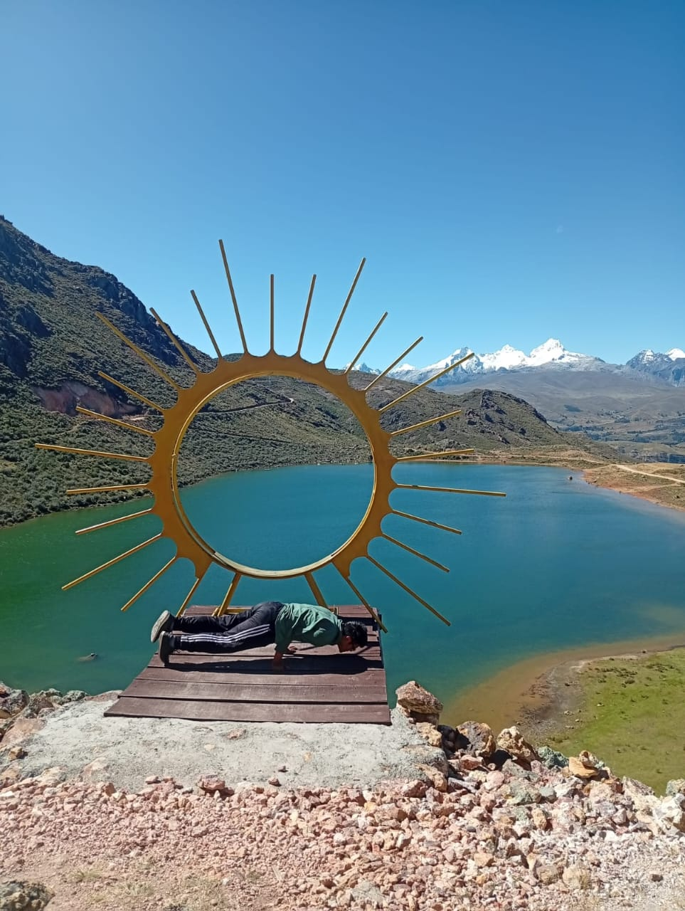
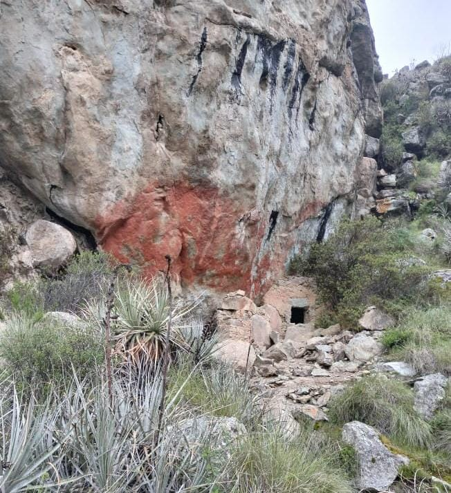

Lugares Turísticos

Laguna Querococha
Hermosa laguna azul ubicada a más de 3,900 msnm, rodeada de imponentes montañas. Ideal para la observación de aves y paisajes andinos.
Ver más
Honcopampa
Importante complejo arqueológico de la cultura Recuay, con estructuras de piedra, plazas ceremoniales y tumbas que datan del 200 al 600 d.C.
Ver más
Galería de Imágenes

Contacto
Información de Contacto
Dirección: Plaza de Armas de Recuay, Ancash, Perú
Teléfono: +51 982228690
Email: eversonsolorzano12@gmail.com
Horario de atención: Lunes a Viernes de 8:00 am a 5:00 pm